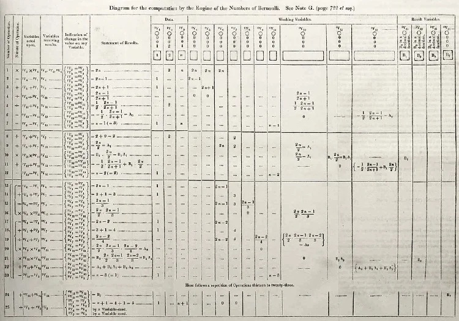

Ada Lovelace (1815 - 1852)

She wrote the first published computer program
In 1842, Ada was commissioned to translate a French transcript of one of Babbage’s lectures into English. Adding her own section simply titled ‘Notes’, Ada went on to write a detailed collection of her own ideas on Babbage’s computing machines that ended up being more extensive than the transcript itself! In Note G, she explained in perfect detail, how to use the Analytical Engine to calculate a sequence of Bernoulli numbers.
She thought deeply about how technology could be used
Lovelace's notes are important in the early history of computers, containing what many consider to be the first computer program—that is, an algorithm designed to be carried out by a machine. Her mindset of "poetical science" led her to ask questions about the Analytical Engine (as shown in her notes) examining how individuals and society relate to technology as a collaborative tool.